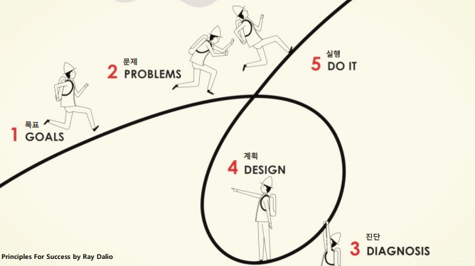
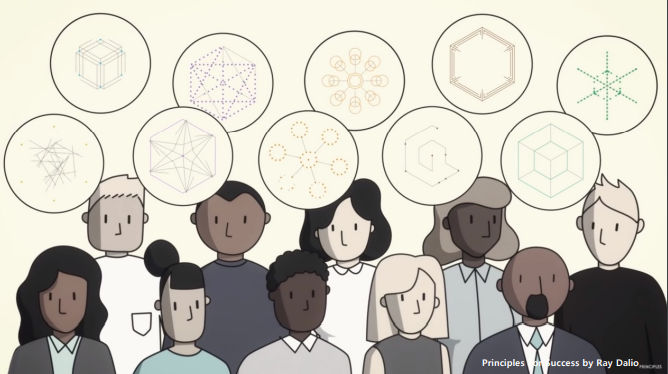

해당 글은 LG에서 지원하는 LG Aimers의 교육 내용을 정리한 것으로,
모든 출처는 https://www.lgaimers.ai/입니다.
데이터 사이언티스트의 소양
기존 산업에서 디지털 전환
데이터에 대한 호기심
이종 데이터의 결합은 혁신을 가져옴
ex) 서울 버스 노선 예측 - 기지국 데이터와의 결합
이종(heterogeneous) 빅데이터의 결합과 새로운 인공지능 기반 계산과학 방법의 적용으로
데이터 사이언스 기반 난제 해결, 정책결정 및 신규 산업 창출의 도약이 다가올 것을 기대
데일리 루틴
마크 저커버그 "매일 아침 일어나서 10억 명 이상에게 서비스할 수 있는 좋은 위치에 있는데 내가 무엇을 먹고 입는지에 대한 결정으로 잠시라도 고민하고 싶지 않다."
변화가 곧 생존
목표가 너무 낮으면 너무 빨리 성취하는 오류
50%의 성공 확률을 가진 목표를 세우기
실패로부터 배워라

협업할 팀을 찾아라
